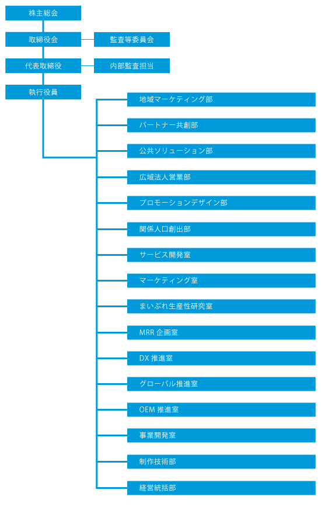

企業概要
| 企業名 | 株式会社フューチャーリンクネットワーク |
|---|---|
| 所在地 | 〒273-0031 千葉県船橋市西船4-19-3 西船成島ビル（受付：3階） |
| TEL | 047-495-0525 |
| FAX | 047-495-0625 |
| 設立 | 2000年3月2日 |
| 資本金 | 291,065,969円（2026年8月31日現在） |
| 代表取締役 | 石井丈晴 |
| コーポレートサイト | https://www.futurelink.co.jp/ |
| 事業内容 | 地域情報プラットフォーム「まいぷれ」の運営 ・地域情報流通事業 ・公共ソリューション事業 サービスと成長戦略を見る ／ グループ各社の役割を見る |
| 役員構成 | 代表取締役 石井丈晴 取締役 岡田亮介 取締役 中川拓哉 社外取締役 毛利裕二 取締役（監査等委員） 神崎進 社外取締役（監査等委員） 片町吉男 社外取締役（監査等委員） 石倉雅恵 |
| 社員数 | 166名（2025年8月31日現在 有期雇用含む 連結） |
| グループ会社 |
株式会社公共BPO 地域活性AIテクノロジーズ株式会社 株式会社フューチャーリンクローカルサポート |
| 厚生労働大臣許可番号 | 株式会社フューチャーリンクネットワーク 有料職業紹介事業 12-ユ-301218 |
組織図
